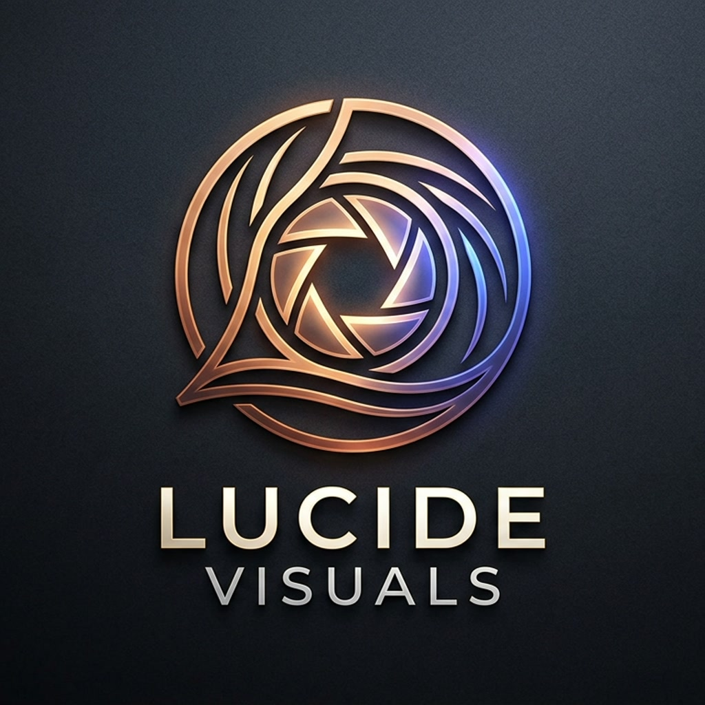

Cinematic clips, crafted to perform.
Lucide Visuals is a content engine for creators and brands. We produce short-form clips and campaigns, and deliver them straight to your TikTok inbox as ready-to-review drafts — you stay in control of every post.
What we do
Short-form clips built for attention: framing, pacing, captions and sound designed for the feed.
Full content campaigns — from brief to approved clip — with consistent branding across every post.
Every clip lands in your TikTok inbox as a draft. You review, edit if you like, and publish with one tap. Nothing goes live without you.
How it works
You provide the material or the brief; our engine cuts, captions and polishes the clip.
The finished clip is sent to your TikTok inbox through TikTok's official Content Posting API.
Open TikTok, review the draft, make any edits you want and publish. You are the one who presses the button.
Contact
Questions about Lucide Visuals, this website or our use of the TikTok API? Open an issue on our GitHub repository and we will get back to you.